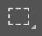
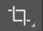
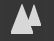
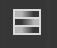
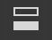

Photoshop
基本后期调色
首页
构图
构图方法
构图工具介绍
构图练习
调色
色调类型
调色练习
测试
理论选择题
相册
综合理论练习题
单选题
1.PS中裁剪工具快捷键是(
B
)
A.【M】
B.【C】
C.【S】
D.【X】
2.以下哪个选项是PS中的截图工具(
C
)
A.
B. 
C. 
D.
3.PS中复制图层的快捷键为(
A
)
A.Ctrl+J
B.Ctrl+M
C.Ctrl+S
D.Ctrl+V
4.港风复古滤镜高光颜色特点(
A
)
A.橙黄色
B.蓝青色
C.深红色
D.灰黑色
5.PS中调节高光和阴影应该点击哪个图标(
C
)
A. 
B. 
C. 
D.
判断题
1.欧美风滤镜应注意清晰度和锐度的调整
正确
错误
正确
2.港风复古滤镜阴影颜色特点是偏橙黄色
正确
错误
错误 港风复古滤镜阴影颜色特点是深青红色
3.用PS调色可通过增加颗粒数量来添加暗角
正确
错误
正确
4.三分法构图可将主体放在任意横竖线上
正确
错误
错误 三分法构图应将主体放在交叉点上
5.沿对角线展布的线条可以是直线，也可以是曲线、折线
正确
错误
正确
提交
查看答案